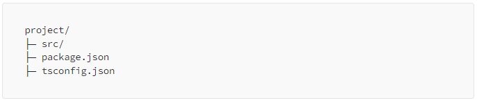
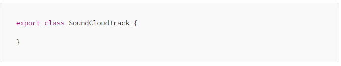
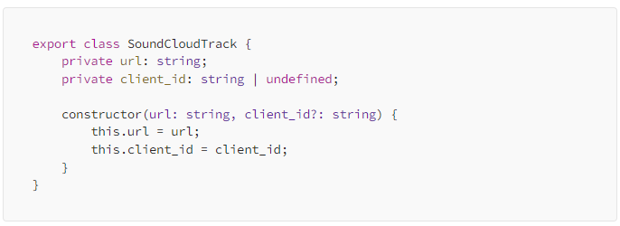
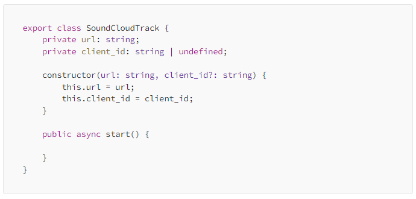
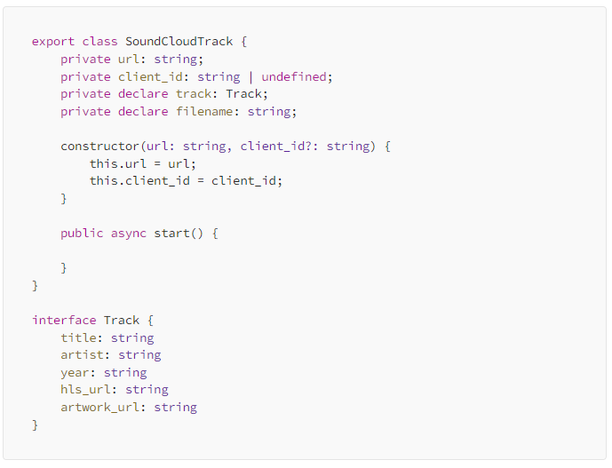
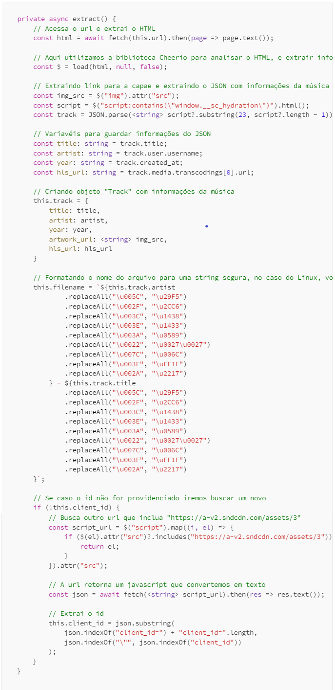
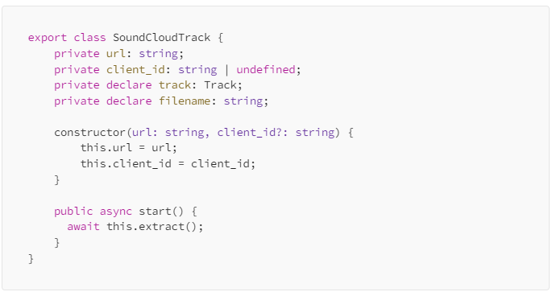
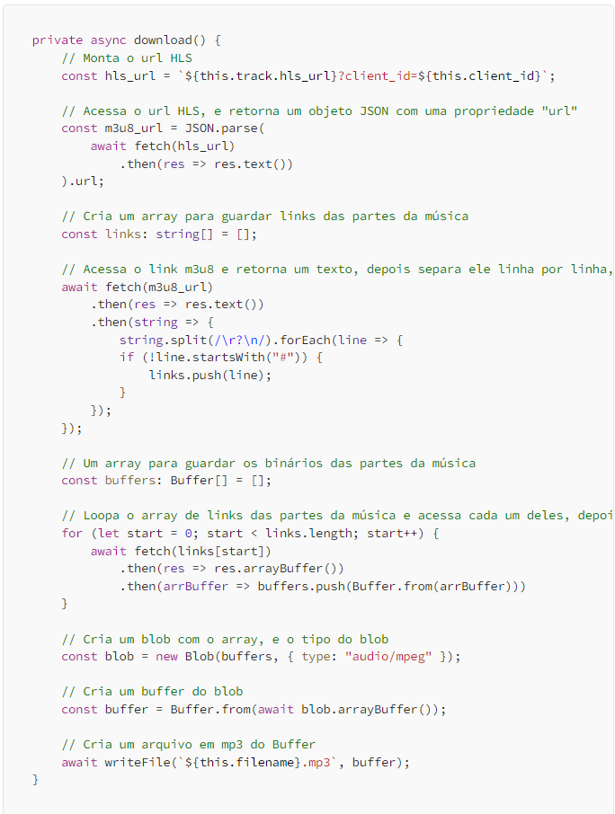
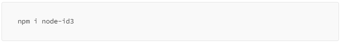
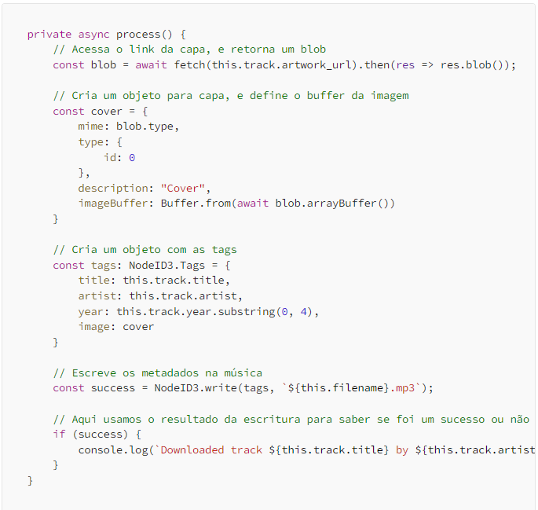

Após alguns artigos explicando sobre web scraping, e como o SoundCloud reproduz as músicas, finalmente iremos construir a base do nosso projeto, antes de tudo se você estiver seguindo o guia artigo por artigo, você deve ter uma estrutura de arquivos similar a seguinte.

Agora iremos criar dois arquivos dentro da pasta src, um com o nome de index.ts e outro de soundcloud.ts, não digitaremos nada dentro do index.ts, mas criaremos e exportaremos uma classe com nome de SoundCloudTrack dentro do soundcloud.ts.

Agora que temos nossa classe base iremos criar um construtor para a classe e alguns atributos dentro da nossa classe.

Aqui temos um atributo para o url da música, e outro para o id que autoriza as chamadas pra API, dentro do construtor é obrigatório o url, mas o id é opcional, isto é porque criaremos um método para buscar o id automaticamente caso não seja especificado.
Agora criaremos um método público para iniciar nossa classe, e consequentemente o processo de download para a música.

O método “start” irá começar o processo de download, esse será o nosso único método público, os demais serão privados.
Depois disso criaremos o nosso método para extrair as informações da música, esse vai ser o primeiro método chamado dentro do nosso “start”, faremos todos eles usando a sintaxe de async-await do NodeJS.
Mas antes disso criaremos uma interface para nossa música, e a usaremos ela para criar nosso objeto de com informações sobre a música.

Criamos mais dois atributos, um para o nosso objeto com informações sobre a música, e outro para o nome do arquivo que baixaremos. A interface “Track” define um objeto base para nossa música, nele temos o título, o artista (quem enviou a música), o ano da música, os links para a capa da música e outro para o arquivo de streaming HLS.

O método acima tem a função de extrair as informações sobre a música, os comentários explicam as funções de cada parte.
Agora que criamos nosso método para extração, vamos chama-lo no nosso método principal.

Agora falta criarmos um método para baixar e outro para processar e aplicar as informações na música.

Nossa classe já consegue baixar uma música, mas precisamos utilizar as informações extraídas para complementar o nosso arquivo. Caso não esteja familiarizado, assim como fotos, arquivos mp3 possuem metadados relacionados ao tipo de extensão, atualmente esses são chamados de ID3, nele podemos definir o título da música, artista, nome do álbum, número da música do álbum, compositor e etc.
Agora para criar um método com a função de processar a música e adicionar os metadados, precisamos de uma biblioteca adicional, neste projeto usaremos o NodeID3

Agora criaremos o nosso método para adicionar metadados.

E com isso temos o nosso scraper de música do SoundCloud, para testar tenter chamar a classe no index.ts.